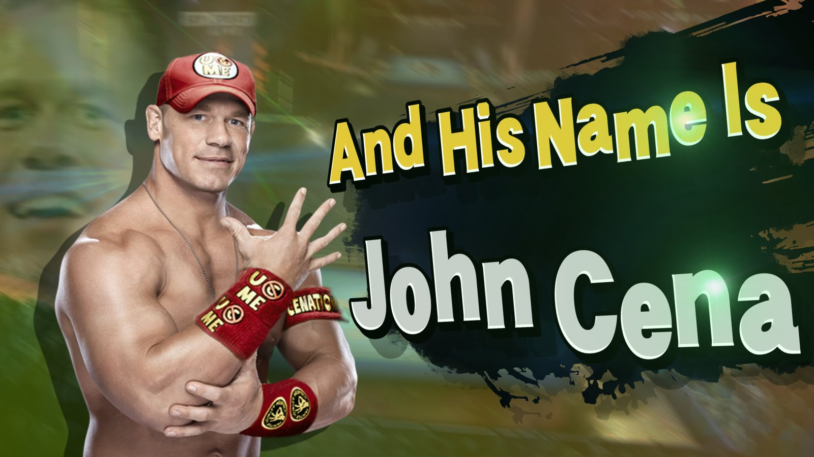

John Cena by Michael Galan

I have just one question for you. Are you ready?
[Woman:]
Am I ready for what, who’s this?
Are you ready for this Sunday night when WWE champ John Cena defends his title in the WWE Super Slam? Right now you can order this awesome pay-per-view event for just $59.99!
[Woman:] Source: LYBIO.net
I’m sorry. No, there is not any chance in hell that we’re ever going to have wrestling in this house again. But thank you, but no. Have a good day.
*ringing phone*
[Woman:]
Hello?
And goodbye to anyone standing in John Cena’s way when he takes on six men in a steel cage “chutes and ladders” match at WWE Super Slam. Order now and save $10 with the low, low price of just $49.99!
[Woman:]
So you guys just called me and as I mentioned before, we’re not ordering this. So please stop calling my house. Thank you and goodbye.
*ringing phone*
[Woman:]
Hello.
Hi, can I speak to champ?
[Woman:]
Who?
Champ, is champ there?
[Woman:]
Who is champ?
That question will be answered this Sunday night when…
[Woman:]
Who is that, hey?
John Cena defends the belt at WWE Super Slam.
[Woman:]
Who is that, hey? Hey sir, can you just quit calling my house.
Taking on Sheamus, The Undertaker…
[Woman:]
Quit calling me.
CM Punk and even Triple H and the Big Show in a spit-swapping makeout match…
[Woman:] Source: LYBIO.net
Holy cow.
WWE Super Slam.
[Woman:]
Listen, hello? Hello! Can you stop screaming and your little sirens or whatever that is? Can you knock it off for five seconds, not interested, stop calling my fucking house.
*ringing phone* *ringing phone*
[Woman:]
Hello.
I’m watching you.
[Woman:]
Excuse me?
That’s exactly what The Undertaker told John Cena, but will he be able to take the belt from the mightiest champion in WWE history at this weekend’s WWE Super Slam.
[Woman:]
For the love of all that it’s [beep] stop calling my house…
John Cena.
[Woman:]
Before I get your number, I will track you down, and absolutely tear you to [beep] pieces. Do you understand me? I know you are John Cena, the crazy mother fucker.
Chainsaws! Explosions! Popcorn!
[Woman:]
No wrestling, no super mother fucking slam is happening in this house.
[Woman:]
I swear to Jesus, if this is those wrestling fuck again.
Okay, good morning. Hi, I’m just calling this morning to ask if you’re a supporter of the United States Military.
[Woman:]
Oh! My God! I apologize. We’ve been getting calls all morning. I apologize and yes, yes, I’m…
Fantastic, great. Are you a supporter of the Marine Corp?
[Woman:] Source: LYBIO.net
Yes, absolutely, absolutely.
Good, great because a former decorated member of the United States Marine Corps needs your support.
And his name is John Cena. He’s going to get in the ring and put boots to asses.
[Woman:]
You, are you kidding me right now?
This weekend! WWE Super Slam!
[Woman:]
Are you kidding me right now, I can’t even handle that, I cannot handle this.
Available right now at a low price of only $39.99!
[Woman:]
I can’t believe if you’re calling me. I’m about to lose my [beep]
*ringing*
[Woman:]
I swear I’m about to call the police.
Hello, you have a collect call from.
John Cena…
Will you accept the charges?
[Woman:]
Go [fuck] your mother.
*ringing*
[Woman:]
Listen, stop calling. There – Is listening not your strong suit because I’m pretty sure it’s [beep] not, but you are not hearing me, shut your [beep] beat down brain from Super Slam and listen – listen I don’t care if they are $59, $99, $39, .39 fuckin cents, I don’t want it, it won’t happen, it’s not running on my TV again, it won’t be allowed in this house, do you understand me, never – I don’t want to be wrestling here in this house, please going through closets and taking you out t-shirts and blurting them, I’m calling the police and telling that you’re harassing me. Stop it now. I’m calling the police. Good luck to you. Have a nice day. [Beep] yourself.
[Woman:]
God damn what?
Hold on, hold on.
Yes.
Mary, Mary this is the ZMorningZoo radio show on Z104.
Hi…
How are you?
[Woman:]
What, what…
We’ve been phone scamming you. Your husband – your husband Donny told us to phone scam you.
[Woman:]
I – we are all in a fight right now. Are you kidding me right now?
I’m so sorry I felt so bad for you.
I couldn’t believe the mouth talk you had on you, oh my god.
Well, it’s fantastic…woooo
[Woman:]
I haven’t had my coffee yet. Shut up.
Yes, oh, I’m sorry…
I know how that feels…
Well, listen we won’t be calling you back anymore I promise okay.
[Woman:]
Thank Jesus.
Do you won’t after hear this – all right you won’t after hear that anymore.
[Woman:] Source: LYBIO.net
I swear to caught. I was going to jail and I don’t – I was – oh, it was bad.